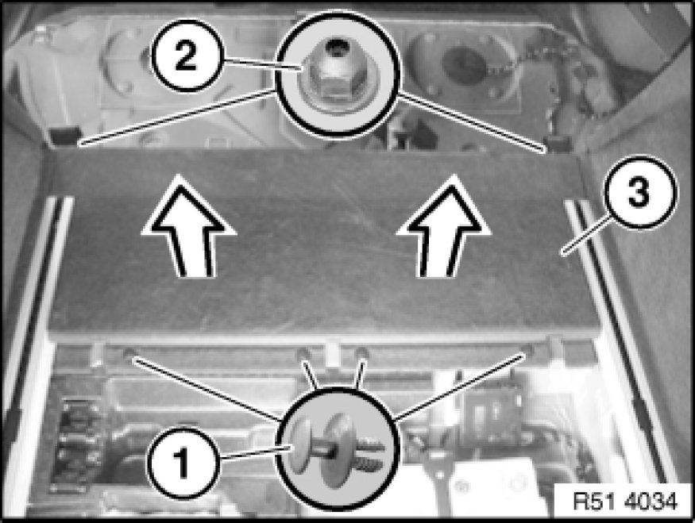
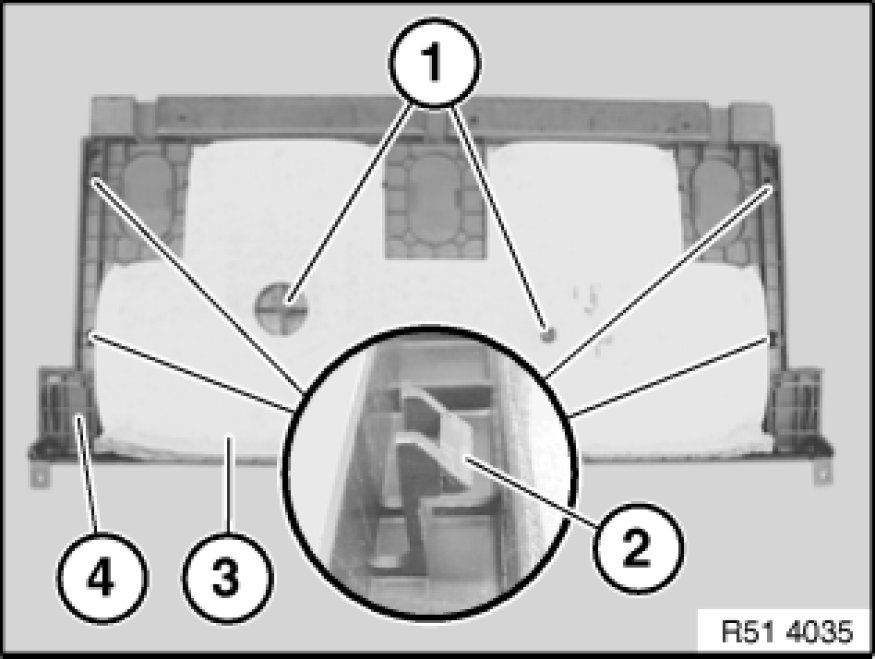

Replacing Front Trim for Luggage Compartment Floor
51 47 131 - Replacing front trim for luggage compartment floor

Necessary preliminary tasks:
- Remove backrest for rear seat Removing and Installing/Replacing Left or Right Rear Seat Backrest (Through-Loading System)
- Remove rear luggage compartment floor trim 51 47 101 Removing and Installing/Replacing Luggage Compartment Floor Trim Panel

Release expander rivets (1) and nuts (2) and remove trim (3) in direction of arrow.
Installation:
If necessary, replace faulty expander rivets (1) and/or nuts (2).

Installation:
Guides (1) and catches (2) on trim (4) must not be damaged.
Replacement:
If necessary, detach sound insulation (3) from trim (4) and fit on new part.